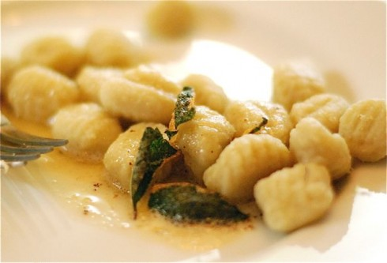

Gnocchi

Description
Gnocchi is a kind of potato dumpling. Presented here is a relatively simple gnocchi recipe.
Ingredients
- Gnocchi
- Butter
- Sage
- Salt
- Parmesan
Steps
- Boil the gnocchi in pot with water (salted).
- Meanwhile, warm the butter, sage, and salt over medium heat. Once the butter turns golden brown, remove from heat.
- Toss the butter with the gnocchi and sprinkle on parmesan.
- Serve.
Home